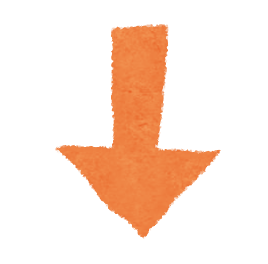

① このボタンを押せばXで検索が可能になります
「OR」か「完全一致」のどちらかを選択して検索も出来ます。

① このボタンを押せばXで検索が可能になります
「OR」か「完全一致」のどちらかを選択して検索も出来ます。
② このボタンを押せば「Yahoo!リアルタイム」で検索が可能になります
「OR」か「完全一致」のどちらかを選択して検索も出来ます。

③ 日付（ピンクの手）の場所に〇〇年〇〇月〇〇日と記載して
日付を押すと指定した日付のポストを検索が出来ます。

④ 「ポスト」をクリックするとXが開き
「ハッシュタグ」のみの新規ポストになります。

